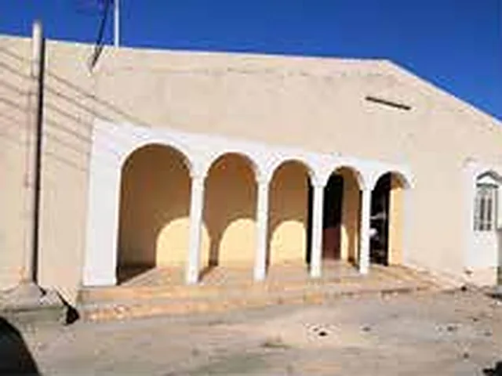

Why renovation?
Because safety begins at home
Bahjah began maintaining and renovating orphans' homes after Cyclone Mekunu in 2018, when a specialist team visited homes, recorded cases and assessed the maintenance and renovation needed.
Since then, maintenance and renovation work has continued throughout the year, and its pace increases when Oman is affected by severe weather.
Every home has its need. Every family has its story. And every gift can change something important in a family's life.
Renovating the homes of orphans and widows is not just repairing "concrete"; it is security for their hearts.From Bahjah's announcement of the campaign to renovate 10 homes of widows and orphans, March 2026 (translated from Arabic)
Source: Bahjah's official profile (maintenance and renovation) and the official campaign announcement


, Arab-world level, 2024")